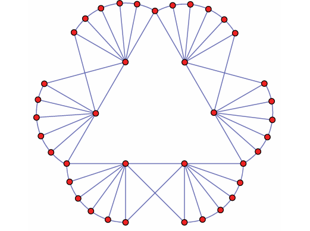

χ-boundedness
Chromatic bounds for graph classes defined by forbidden induced subgraphs and related structural restrictions.
MATHEMATICS · GRAPH THEORY · COMBINATORICS
Researcher in Mathematics
Structural Graph Theory
My research interests are in structural graph theory, particularly χ-boundedness, perfect divisibility, and structural problems concerning longest cycles and paths.

My research focuses on structural graph theory, with particular emphasis on coloring and decomposition, together with structural problems concerning longest cycles and paths.
Chromatic bounds for graph classes defined by forbidden induced subgraphs and related structural restrictions.
Perfect and perfectly weight divisible graph classes, structural decomposition, and coloring consequences.
Structural properties of longest cycles and longest paths.
Published papers will be added from my MathSciNet record.
A graph G is perfectly weight divisible if, for every positive integral weight function on V(G) and every induced subgraph H of G with at least one edge, V(H) can be partitioned into two sets A and B such that H[A] is perfect and the maximum weight of a clique in H[B] is smaller than the maximum weight of a clique in H. Perfect divisibility and its weighted form provide a natural approach to polynomial χ-boundedness. A fork, also known as a chair, is the graph obtained from a claw by subdividing one of its edges once. We prove that every fork-free graph is perfectly weight divisible. As a consequence, we confirm a conjecture of Sivaraman that every fork-free graph is perfectly divisible.
An (n,k,t)-graph is a graph on n vertices in which every set of k vertices contains a copy of Kt. Turán’s theorem implies that an (n,k,2)-graph with the minimum number of edges is an equitable disjoint union of cliques. Recently, Baumann and Briggs (Electron. J. Combin., 2025) settled the Strong (n,k,t)-Conjecture by determining the minimum number of edges in an (n,k,t)-graph. In their paper, they proposed the further problem of determining the minimum number of s-cliques in an (n,k,t)-graph. The corresponding problem for (n,k,2)-graphs is a classical problem of Erdős and has been extensively studied. The case of (n,4,3)-graphs has also been determined. Thus, Baumann and Briggs pointed out that the smallest interesting open problem is to determine the minimum number of triangles in an (n,5,3)-graph. In this note, we resolve this problem and characterize all extremal graphs.
A hole is an induced cycle of length at least four, and an even hole is a hole of even length. A cap is obtained from a hole by adding a vertex adjacent to exactly two consecutive vertices of the hole. Chen, Xu, and Xu proved that every {cap, even hole}-free graph G satisfies χ(G) ≤ ⌈5ω(G)/4⌉, and improved this bound to χ(G) ≤ ⌈7ω(G)/6⌉ when 5-holes are also excluded. They asked whether, for every integer q ≥ 3, every {cap, even hole}-free graph with no odd hole of length at most 2q−1 satisfies χ(G) ≤ ⌈(2q+1)ω(G)/(2q)⌉. We answer this question affirmatively and show that the bound is sharp for every q ≥ 3.
McDiarmid and Yolov introduced the bipartite-hole-number and proved that a minimum-degree condition in terms of this parameter forces a Hamilton cycle. They also gave a sufficient condition for packing edge-disjoint Hamilton cycles. For integers a,k ≥ 2, let f(a,k) be the least integer d such that every graph G on at least three vertices with bipartite-hole-number at most a and minimum degree at least d contains k pairwise edge-disjoint Hamilton cycles. We prove that f(a,k) = Θ(a+k+ak/log(k+2)).
Nikiforov conjectured that, for every fixed k ≥ 2 and all sufficiently large n, the unique n-vertex C2k+2-free graph with maximum adjacency spectral radius is S+n,k. We prove a stronger uniform theorem for Nikiforov's matrices Aα(G), yielding a linear threshold in k for α bounded away from 1. In particular, the adjacency-spectral case answers a problem of Li and Ning. The proof introduces a weighted rooted Erdős–Gallai type path lemma and also gives asymptotically tight spectral bounds for two local forbidden-subgraph families.
Nikiforov's spectral Turán inequality for walks bounds powers of the spectral radius in terms of the number of walks and the clique number. Motivated by a conjecture of Kannan, Kumar, and Pragada, we establish a stronger edge-local inequality, which implies the conjectured vertex-local form and recovers Nikiforov's inequality. We also determine all extremal graphs for both the edge-local and vertex-local inequalities. The main ingredient is a Markov-chain estimate constructed from a Perron vector of the adjacency matrix.
A graph is ISK4-free if it contains no induced subdivision of K4. We characterize the structure of {ISK4, diamond, bowtie}-free graphs and prove that every such graph is 3-colorable, answering a question of Chen et al. affirmatively and extending an earlier result of Chudnovsky et al. The structural theorem also yields polynomial-time algorithms for decomposition and coloring in this graph class.
The Borodin--Kostochka conjecture states that every graph G with maximum degree Δ(G) ≥ 9 satisfies χ(G) ≤ max{ω(G), Δ(G)−1}. We verify the conjecture for graphs with sufficiently large maximum degree. More precisely, every graph with maximum degree Δ ≥ 5.3 × 106 and clique number ω(G) < Δ satisfies χ(G) ≤ Δ−1, improving a longstanding result of Reed.
Mathematical notes and expository material on graph theory will be collected here.
Curriculum vitae
View PDF ↗